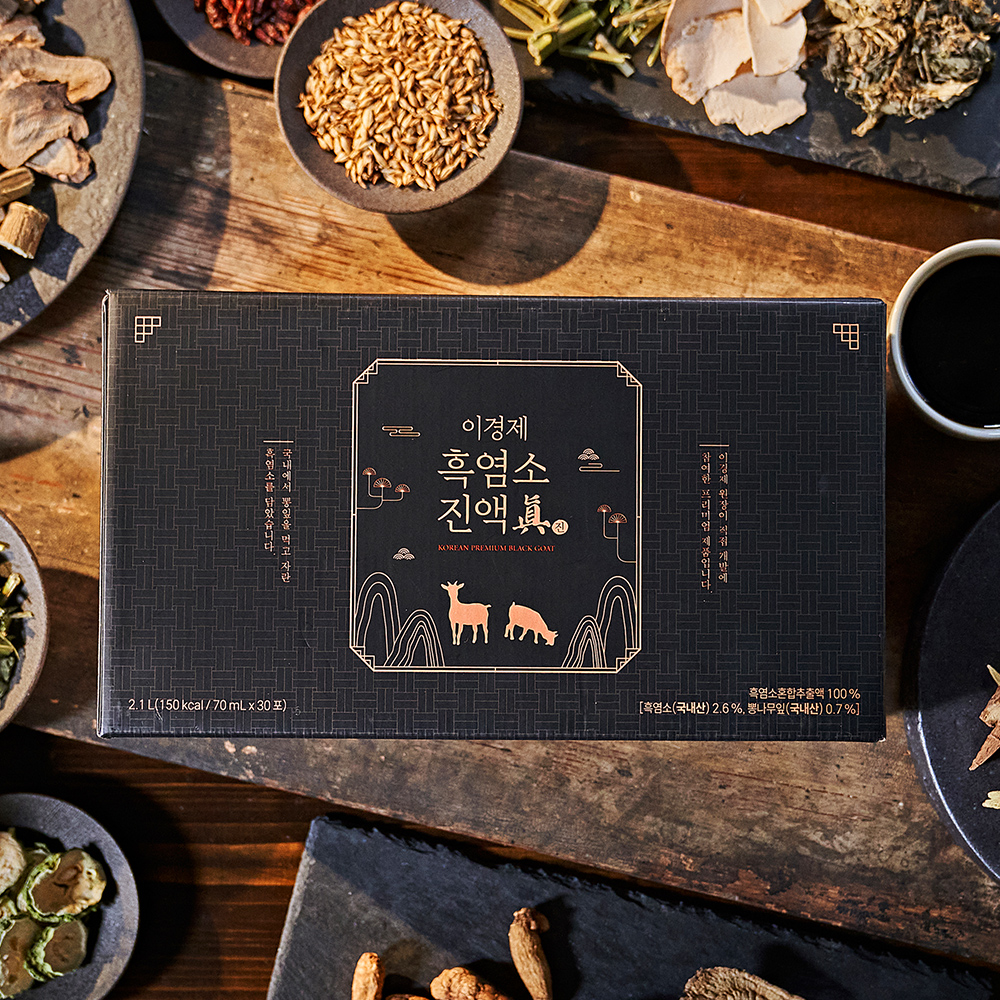
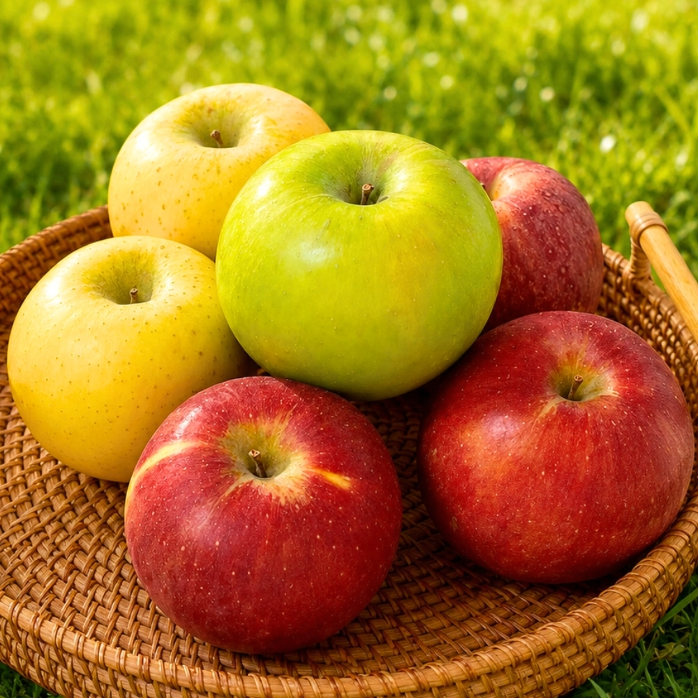

Why Korea Perfected the "Easy-Cut Stick & Pouch" Supplement Format
In Western supplement aisles, you mostly find giant plastic tubs of powder or horse-sized capsules that sit half-finished in a cabinet. In South Korea, busy work and study schedules gave rise to single-portion Easy-Cut liquid pouches and micro-granule sticks. You toss two sticks in your jacket pocket or laptop bag, tear the top off with one hand, and take them anywhere—no shaker bottle or spoon required.


1. 6-Year Korean Red Ginseng Liquid Sticks (홍삼 스틱) & Herbal Extract Tonics
Whether it’s CheongKwanJang HongSamWon / Everytime or traditional slow-decocted Korean herbal pouches containing Angelica gigas (Danggui), Astragalus (Hwanggi), Peony root, and Jujube, liquid herbal extracts are Korea’s gold standard for fighting afternoon fatigue without the jittery heart rate spike of a third espresso.
- Why 6-Year-Old Root Matters: Korean ginseng reaches peak active ginsenoside concentration only in its sixth year of cultivation before harvesting and steaming into Red Ginseng (Hongsam).
- Pro Tip for First-Timers: Pure 100% red ginseng extract has a bold, earthy bitterness. If you’re new to Korean herbal tonics, start with pomegranate-blended red ginseng sticks or honeyed herbal pouches over ice.


2. TEAZEN Fermented Kombucha Powder Sticks (15 kcal, 0g Sugar)
Ever since BTS’s Jungkook casually mentioned drinking two packets a day on a livestream, TEAZEN Kombucha has remained the #1 afternoon desk drink in Korea. Using freeze-dried German kombucha extract paired with 12 strains of lactic acid bacteria and prebiotics, each 5g packet fizzes instantly in cold water—replacing sugary sodas with a crisp Lemon, Peach, Berry, or Shine Muscat fizz at just 15 calories.
3. Chong Kun Dang Lacto-Fit Gold Synbiotic Sticks (락토핏 골드)
A box of yellow Lacto-Fit Gold cylinders sits on the dining table of virtually every Korean household—literally selling more than one tub per second domestically. Unlike capsules you have to swallow with water, Lacto-Fit is a delicious grape-citrus micro-powder that melts on your tongue in two seconds while delivering 2 billion CFU of synbiotics (probiotics + prebiotic bacteriophage food).
4. Korean Lactose-Free Core Protein & Grain Shakes (Selex / Misugaru)
Over 70% of East Asians experience mild lactose sensitivity from standard dairy whey concentrates. Korean nutrition leaders like Maeil Selex (셀렉스) and traditional roasted multigrain Misugaru (미숫가루) solve this by combining lactose-free whey protein isolate (WPI) with roasted soy, black sesame, and 3,000mg of muscle-supporting leucine—tasting like a lightly toasted nutty latte rather than chalky gym powder.
5. Korean Pomegranate & Apple Cider Vinegar Enzyme Sticks
After heavy Korean BBQ or late-night ramen, locals reach for single-serve fermented fruit vinegar or grain enzyme (Hyoso) packets to support post-meal digestion and de-bloating.
Comparison Table: Top 5 Korean Wellness Picks on Amazon
| Rank & Product | Primary Benefit | Format & Taste | When Koreans Take It | Amazon Availability |
|---|---|---|---|---|
| 1. Korean Red Ginseng Extract Sticks (CheongKwanJang) | Caffeine-Free Energy, Immunity & Focus | 10ml Liquid Stick or 50ml Pouch · Earthy & Rich | Morning Commute or 2 PM Slump | 🛒 Check Price on Amazon |
| 2. TEAZEN Kombucha Powder Sticks (Lemon / Peach / Berry) | Zero-Sugar Carbonated Hydration + 12 Probiotics | 5g Effervescent Powder Stick (Mix in 250ml Cold Water) | With Lunch or Post-Workout | 🛒 Check Price on Amazon |
| 3. Chong Kun Dang Lacto-Fit Gold Probiotics | Daily Gut Microbiome & Digestive Regularity | 2g Melt-in-Mouth Powder Stick (No Water Needed) | First Thing Before Breakfast | 🛒 Check Price on Amazon |
| 4. Korean Lactose-Free Protein & Roasted Grain Shake | Gentle Muscle Recovery & Quick Breakfast Meal | Easy-Mix Powder · Nutty Roasted Grain Flavor | Busy Mornings or Evening Walk | 🛒 View on Amazon |
| 5. Korean Red Ginseng & Pomegranate Collagen Sticks | Antioxidant Vitality + Softer Fruit-Forward Taste | Liquid or Jelly Stick · Tangy Sweet Pomegranate | Afternoon Desk Snack | 🛒 Buy on Amazon |
Pros & Cons of Switching to Korean Single-Serve Wellness
✅ Pros
- Zero Oxidation or Clumping: Because every dose is nitrogen-sealed in an individual foil stick, the 30th packet is just as fresh as the 1st.
- Travel & Office Friendly: TSA carry-on friendly and takes up almost zero space in a backpack or desk drawer.
⚠️ Cons
- Red Ginseng Taste Curve: Unsweetened 100% Korean Red Ginseng has a strong herbal bite—if you prefer a milder flavor, choose the Pomegranate Red Ginseng or Honeyed edition first.
- Cold Water Only for Kombucha: Always mix TEAZEN Kombucha in cold or room-temperature water (hot water diminishes live probiotic cultures and fizziness).